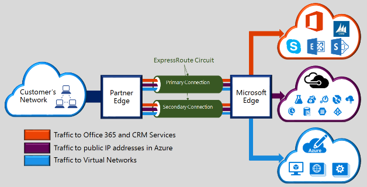
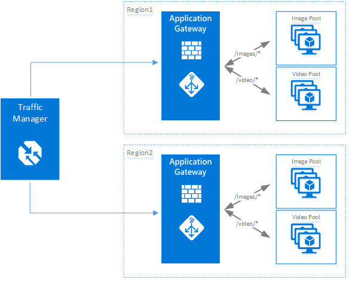

1.0 Introduction
1.1 Overview
1.2 Azure Platform
1.3 Abstract
1.4 Acknowledgement
2.0 Summary Azure Security Capabilities
2.1 Security Features Implemented to Secure the Azure Platform
2.2 Security Features Offered by Azure to Secure Data and Application
3.0 Operations
3.1 Operations Management Suite Security and Audit Dashboard
3.4 Azure Monitor
3.5 Log Analytics
3.6 Azure Advisor
4.0 Applications
4.1 Web Application vulnerability scanning
4.4 Authentication and authorization in Azure App Service
4.5 Layered Security Architecture
4.6 Web server diagnostics and application diagnostics
4.6.1 Web server diagnostics
4.6.2 Application diagnostics
5.0 Storage
5.1 Role-Based Access Control (RBAC)
5.6 Enabling Browser-Based Clients Using CORS
6.0 Networking
6.1.1 Network Security Groups
6.1.2 Route Control and Forced Tunneling
6.1.3 Virtual Network Security Appliances
6.3 VPN Gateway
6.4 Express Route
6.7 Traffic Manager
6.9 Internal DNS
6.10 Azure DNS
6.11 Log Analytics NSGs
7.0 Compute
7.5 SQL VM TDE
7.7 Patch Updates
7.8 Security policy management and reporting
8.0 Identify and access management
8.1 Secure Identity
We know that security is job one in the cloud and how important it is that you find accurate and timely information about Azure security. One of the best reasons to use Azure for your applications and services is to take advantage of the wide array of security tools and capabilities available. These tools and capabilities help make it possible to create secure solutions on the secure Azure platform. Microsoft Azure provides confidentiality, integrity, and availability of customer data, while also enabling transparent accountability. To help you better understand the array of security controls implemented within Microsoft Azure from both the customer's and Microsoft operations' perspectives, this white paper, "Introduction to Azure Security", is written to provide a comprehensive look at the security available with Microsoft Azure.
Azure is a public cloud service platform that supports a broad selection of operating systems, programming languages, frameworks, tools, databases and devices. It can run Linux containers with Docker integration; build apps with JavaScript, Python, .NET, PHP, Java and Node.js; build back-ends for iOS, Android and Windows devices. Azure public cloud services support the same technologies millions of developers and IT professionals already rely on and trust. When you build on, or migrate IT assets to, a public cloud service provider you are relying on that organization’s abilities to protect your applications and data with the services and the controls they provide to manage the security of your cloud-based assets. Azure’s infrastructure is designed from the facility to applications for hosting millions of customers simultaneously, and it provides a trustworthy foundation upon which businesses can meet their security requirements. In addition, Azure provides you with a wide array of configurable security options and the ability to control them so that you can customize security to meet the unique requirements of your organization’s deployments. This document will help you understand how Azure security capabilities can help you fulfill these requirements.
Initially, public cloud migrations were driven by cost savings and agility to innovate. Security was considered as a major concern for some time, and even a show stopper, for public cloud migration. However, public cloud security has transitioned from a major concern to one of the drivers for cloud migration. The rationale behind this is the superior ability of large public cloud service providers to protect applications and the data of cloud-based assets. Azure’s infrastructure is designed from the facility to applications for hosting millions of customers simultaneously, and it provides a trustworthy foundation upon which businesses can meet their security needs. In addition, Azure provides you with a wide array of configurable security options and the ability to control them so that you can customize security to meet the unique requirements of your deployments to meet best practices, your IT control policies and adhere to external regulations. This paper outlines Microsoft’s approach to security within the Microsoft Azure cloud platform: • Security features implemented by Microsoft to secure the Azure infrastructure, customer data and applications; and • Azure services and security features available to you to manage the Security of the Services and your data within your Azure subscriptions.
Authors: Tom Shiner
Contributors:
Reviewers:
The tables below provide a brief description of the security features implemented by Microsoft to secure the Azure infrastructure, customer data and secure applications.
The features listed below are capabilities you can review to provide the assurance that the Azure Platform is managed in a secure manner. Links have been provided for further drill down on how Microsoft addresses customer trust questions in four areas: Secure Platform, Privacy & Controls, Compliance, and Transparency.
Depending on the cloud service model, there is variable responsibility for certain aspects of how well-managed and secure data and applications are. There are capabilities available in the Azure Platform to assist you in meeting these responsibilities through built-in features, examples of which are listed in the table below, and through partner solutions that can be deployed into an Azure subscription. The built-in capabilities are organized in six (6) functional areas: Operations, Applications, Storage, Networking, Compute, and Identity. Additional detail on the features and capabilities available in the Azure Platform in these six (6) areas are provided through links in the table and summary information that follow.
The section provides a table with links to additional information regarding key features in security operations and summary information about these capabilities.
| Operations | Azure Operational Manager Suite |Azure Resource Manager|Application Insight|Azure Monitor|Log Analytics|Azure Advisor|Azure Security Center|
| - |
The OMS Security and Audit solution provides a comprehensive view into your organization’s IT security posture with built-in search queries for notable issues that require your attention. The Security and Audit dashboard is the home screen for everything related to security in OMS. It provides high-level insight into the Security state of your computers. It also includes the ability to view all events from the past 24 hours, 7 days, or any other custom time frame. In addition, you can configure OMS Security & Compliance to automatically carry out specific actions when a specific event is detected.
Azure Resource Manager (ARM) enables you to work with the resources in your solution as a group. You can deploy, update, or delete all the resources for your solution in a single, coordinated operation. You use an ARM template for deployment and that template can work for different environments such as testing, staging, and production. Resource Manager provides security, auditing, and tagging features to help you manage your resources after deployment. ARM template-based deployments help improve the security of solutions deployed in Azure because standard security control settings and best practices can be integrated into standardized template-based deployments. This reduces the risk of security configuration errors that might take place during manual deployments.
Application Insights is an extensible Application Performance Management (APM) service for web developers. With Application Insights you can monitor your live web applications and automatically detect performance anomalies. It includes powerful analytics tools to help you diagnose issues and to understand what users actually do with your apps. It monitors your application all the time it's running, both during testing and after you've published or deployed it. Application Insights creates charts and tables that show you, for example, what times of day you get most users, how responsive the app is, and how well it is served by any external services that it depends on. If there are crashes, failures or performance issues, you can search through the telemetry data in detail to diagnose the cause. And the service will send you emails if there are any changes in the availability and performance of your app. Application Insights thus becomes a valuable security tool because it helps with the “availability” in the confidentiality, integrity and availability security triad.
Azure Monitor offers visualization, query, routing, alerting, auto scale, and automation on data both from the Azure infrastructure (Activity Log) and each individual Azure resource (Diagnostic Logs). You can use Azure Monitor to alert you on security related events that are generated in Azure logs.
Log Analytics part of Operations Management Suite – Provides a holistic IT management solution for both on-premises and third-party cloud-based infrastructure (such as AWS) in addition to Azure resources. Data from Azure Monitor can be routed directly to Log Analytics so you can see metrics and logs for your entire environment in one place. Log Analytics can be a very useful tool in forensic and other security analysis, as the tool enables you to quickly search through large amounts of security related entries with a flexible query approach. In addition, on-premises firewall and proxy logs can be exported into Azure and made available for analysis using Log Analytics.
Azure Advisor is a personalized cloud consultant that helps you follow best practices to optimize your Azure deployments. It analyzes your resource configuration and usage telemetry. It then recommends solutions to help improve the performance, security, and high availability of your resources while looking for opportunities to reduce your overall Azure spend. Azure Advisor provides security recommendations which can significant improve your overall security posture for solutions you deploy in Azure. These recommendations are drawn from security analysis performed by Azure Security Center.
Azure Security Center helps you prevent, detect, and respond to threats with increased visibility into and control over the security of your Azure resources. It provides integrated security monitoring and policy management across your Azure subscriptions, helps detect threats that might otherwise go unnoticed, and works with a broad ecosystem of security solutions. Azure Security Center helps with security operations by providing you a single dashboard that surfaces alerts and recommendations that can be acted upon immediately. In many cases, you can remediate issues with a single click within the Azure Security Center console.
The section provides a table with links to additional information regarding key features in application security and summary information about these capabilities.
One of the easiest ways to get started with testing for vulnerabilities on your App Service app is to use the integration with Tinfoil Security to perform one-click vulnerability scanning on your app. You can view the test results in an easy-to-understand report, and learn how to fix each vulnerability with step-by-step instructions.
If you prefer to perform your own penetration tests or want to use another scanner suite or provider, you must follow the Azure penetration testing approval process and obtain prior approval to perform the desired penetration tests.
The web application firewall (WAF) in Azure Application Gateway helps protect web applications from common web-based attacks like SQL injection, cross-site scripting attacks, and session hijacking. It comes preconfigured with protection from threats identified by the Open Web Application Security Project (OWASP) as the top 10 common vulnerabilities.aspx).
App Service Authentication / Authorization is a feature that provides a way for your application to sign in users so that you don't have to change code on the app backend. It provides an easy way to protect your application and work with per-user data.
Since App Service Environments provide an isolated runtime environment deployed into an Azure Virtual Network, developers can create a layered security architecture providing differing levels of network access for each application tier. A common desire is to hide API back-ends from general Internet access, and only allow APIs to be called by upstream web apps. Network Security groups (NSGs) can be used on Azure Virtual Network subnets containing App Service Environments to restrict public access to API applications.
App Service web apps provide diagnostic functionality for logging information from both the web server and the web application. These are logically separated into web server diagnostics and application diagnostics.aspx). Web server includes two major advances in diagnosing and troubleshooting sites and applications. The first new feature is real-time state information about application pools, worker processes, sites, application domains, and running requests. The second new advantage are the detailed trace events that track a request throughout the complete request-and-response process. To enable the collection of these trace events, IIS 7 can be configured to automatically capture full trace logs, in XML format, for any particular request based on elapsed time or error response codes.
You can enable or disable the following kinds of logs:
Web Server Logging - Information about HTTP transactions using the W3C extended log file format. This is useful when determining overall site metrics such as the number of requests handled or how many requests are from a specific IP address.
Application diagnostics allows you to capture information produced by a web application. ASP.NET applications can use the System.Diagnostics.Trace class to log information to the application diagnostics log. In Application Diagnostics, there are two major types of events, those related to application performance and those related to application failures and errors. The failures and errors can be divided further into connectivity, security, and failure issues. Failure issues are typically related to a problem with the application code. In Application Diagnostics, you can view events grouped in these ways:
All (displays all events)
The section provides a table with links to additional information regarding key features in Azure storage security and summary information about these capabilities.
| Storage | Using ARM & RBAC to secure storage account | Using Shared Access Signature and store access policies to secure data | Encryption in Transit | Encryption at Rest | Storage Analytics | Enabling Browser-Based Clients using CORS |
|---|---|---|---|---|---|---|
You can secure your storage account with Role-Based Access Control (RBAC). Restricting access based on the need to know and least privilege security principles is imperative for organizations that want to enforce Security policies for data access. These access rights are granted by assigning the appropriate RBAC role to groups and applications at a certain scope. You can use built-in RBAC roles, such as Storage Account Contributor, to assign privileges to users. Access to the storage keys for a storage account using the Azure Resource Manager (ARM) model can be controlled through Role-Based Access Control (RBAC).
A shared access signature (SAS) provides delegated access to resources in your storage account. The SAS means that you can grant a client limited permissions to objects in your storage account for a specified period and with a specified set of permissions. You can grant these limited permissions without having to share your account access keys.
Encryption in transit is a mechanism of protecting data when it is transmitted across networks. With Azure Storage, you can secure data using:
Cross-Origin Resource Sharing (CORS) is a mechanism that allows domains to give each other permissions for accessing each other’s resources. The User Agent sends extra headers to ensure that the JavaScript code loaded from a certain domain is allowed to access resources located at another domain. The latter domain then replies back with extra headers allowing or denying the original domain access to its resources.
Azure storage services now support CORS so that once you set the CORS rules for the service, a properly authenticated request made against the service from a different domain will be evaluated to determine whether it is allowed according to the rules you have specified.
The section provides a table with links to additional information regarding key features in Azure network security and summary information about these capabilities.
Network access control is the act of limiting connectivity to and from specific devices or subnets and represents the core of network security. The goal of network access control is to make sure that your virtual machines and services are accessible to only users and devices to which you want them accessible.
A Network Security Group (NSG) is a basic stateful packet filtering firewall and it enables you to control access based on a 5-tuple. NSGs do not provide application layer inspection or authenticated access controls. They can be used to control traffic moving between subnets within an Azure Virtual Network as well as traffic between an Azure Virtual Network and the Internet.
The ability to control routing behavior on your Azure Virtual Networks is a critical network security and access control capability. For example, if you want to make sure that all traffic to and from your Azure Virtual Network goes through that virtual security appliance, you need to be able to control and customize routing behavior. You can do this by configuring User Defined Routes in Azure. User Defined Routes allow you to customize inbound and outbound paths for traffic moving into and out of individual virtual machines or subnets so as to insure the most secure route possible. Forced tunneling is a mechanism you can use to ensure that your services are not allowed to initiate a connection to devices on the Internet. Note that this is different from being able to accept incoming connections and then responding to them. Front-end web servers need to respond to requests from Internet hosts, and so Internet-sourced traffic is allowed inbound to these web servers and the web servers can respond. Forced tunneling is commonly used to force outbound traffic to the Internet to go through on-premises security proxies and firewalls.
While Network Security Groups, User Defined Routes, and forced tunneling provide you a level of security at the network and transport layers of the OSI model, there may be times when you want to enable security at higher levels of the stack. You can access these enhanced network security features by using an Azure partner network security appliance solution. You can find the most current Azure partner network security solutions by visiting the Azure Marketplace and searching for “security” and “network security”.
Azure networking supports the following secure remote access scenarios:
To send network traffic between your Azure Virtual Network and your on-premises site, you must create a VPN gateway for your Azure Virtual Network. A VPN gateway is a type of virtual network gateway that sends encrypted traffic across a public connection. You can also use VPN gateways to send traffic between Azure Virtual Networks over the Azure network fabric.
Microsoft Azure ExpressRoute is a dedicated WAN link that lets you extend your on-premises networks into the Microsoft cloud over a dedicated private connection facilitated by a connectivity provider. With ExpressRoute, you can establish connections to Microsoft cloud services, such as Microsoft Azure, Office 365, and CRM Online. Connectivity can be from an any-to-any (IP VPN) network, a point-to-point Ethernet network, or a virtual cross-connection through a connectivity provider at a co-location facility. ExpressRoute connections do not go over the public Internet and thus can be considered more secure than VPN-based solutions. This allows ExpressRoute connections to offer more reliability, faster speeds, lower latencies, and higher security than typical connections over the Internet. 
Microsoft Azure Application Gateway provides an Application Delivery Controller (ADC) as a service, offering various layer 7 load balancing capabilities for your application. It allows you to optimize web farm productivity by offloading CPU intensive SSL termination to the Application Gateway (also known as “SSL offload” or “SSL bridging”). It also provides other Layer 7 routing capabilities including round-robin distribution of incoming traffic, cookie based session affinity, URL path based routing, and the ability to host multiple websites behind a single Application Gateway. Azure Application Gateway is a layer-7 load balancer. It provides failover, performance-routing HTTP requests between different servers, whether they are on the cloud or on-premises. Application provides many Application Delivery Controller (ADC) features including HTTP load balancing, cookie-based session affinity, Secure Sockets Layer (SSL) offload, custom health probes, support for multi-site, and many others.

Web Application Firewall is a feature of Azure Application Gateway that provides protection to web applications that leverage application gateway for standard Application Delivery Control (ADC) functions. Web application firewall does this by protecting them against most of the OWASP top 10 common web vulnerabilities.
A centralized web application firewall to protect against web attacks makes security management much simpler and gives better assurance to the application against the threats of intrusions. A WAF solution can also react to a security threat faster by patching a known vulnerability at a central location versus securing each of individual web applications. Existing application gateways can be converted to an application gateway with web application firewall easily.
Microsoft Azure Traffic Manager allows you to control the distribution of user traffic for service endpoints in different data centers. Service endpoints supported by Traffic Manager include Azure VMs, Web Apps, and Cloud services. You can also use Traffic Manager with external, non-Azure endpoints. Traffic Manager uses the Domain Name System (DNS) to direct client requests to the most appropriate endpoint based on a traffic-routing method and the health of the endpoints. Traffic Manager provides a range of traffic-routing methods to suit different application needs, endpoint health monitoring, and automatic failover. Traffic Manager is resilient to failure, including the failure of an entire Azure region.
Azure Load Balancer delivers high availability and network performance to your applications. It is a Layer 4 (TCP, UDP) load balancer that distributes incoming traffic among healthy instances of services defined in a load-balanced set. Azure Load Balancer can be configured to:
The Domain Name System, or DNS, is responsible for translating (or resolving) a website or service name to its IP address. Azure DNS is a hosting service for DNS domains, providing name resolution using Microsoft Azure infrastructure. By hosting your domains in Azure, you can manage your DNS records using the same credentials, APIs, tools, and billing as your other Azure services. DNS supports the availability aspect of the “CIA” security triad.
You can enable the following diagnostic log categories for NSGs:
Rule counter: Contains entries for how many times each NSG rule is applied to deny or allow traffic.
Security Center helps you prevent, detect, and respond to threats, and provides you increased visibility into, and control over, the Security of your Azure resources. It provides integrated Security monitoring and policy management across your Azure subscriptions, helps detect threats that might otherwise go unnoticed, and works with a broad ecosystem of Security solutions. Network recommendations center around next generation firewalls, Network Security Groups, configuring inbound traffic rules, and more. Available network recommendations are as follows:
Add a Next Generation Firewall Recommends that you add a Next Generation Firewall (NGFW) from a Microsoft partner to increase your security protections
The section provides a table with links to additional information regarding key features in this area and summary information about these capabilities.
| Compute | Antimalware & Antivirus | Hardware Security Module(Key Vault) | VM Backup and Site recovery | SQL VM TDE, VM disk encryption | Patch Updates | Vulnerability scanning Policy Management, Security Center |
|---|---|---|---|---|---|---|
With Azure IaaS, you can use antimalware software from security vendors such as Microsoft, Symantec, Trend Micro, McAfee, and Kaspersky to protect your virtual machines from malicious files, adware, and other threats. Microsoft Antimalware for Azure Cloud Services and Virtual Machines is a real-time protection capability that helps identify and remove viruses, spyware, and other malicious software. Microsoft Antimalware provides configurable alerts when known malicious or unwanted software attempts to install itself or run on your Azure systems. Microsoft Antimalware can also be deployed using Azure Security Center
Encryption and authentication do not improve security unless the keys themselves are protected. You can simplify the management and security of your critical secrets and keys by storing them in Azure Key Vault. Key Vault provides the option to store your keys in hardware Security modules (HSMs) certified to FIPS 140-2 Level 2 standards. Your SQL Server encryption keys for backup or transparent data encryption can all be stored in Key Vault with any keys or secrets from your applications. Permissions and access to these protected items are managed through Azure Active Directory.
Azure Backup is a scalable solution that protects your application data with zero capital investment and minimal operating costs. Application errors can corrupt your data, and human errors can introduce bugs into your applications that can lead to security issues. With Azure Backup, your virtual machines running Windows and Linux are protected.
An important part of your organization's business continuity/disaster recovery (BCDR) strategy is figuring out how to keep corporate workloads and apps up and running when planned and unplanned outages occur. Azure Site Recovery helps orchestrate replication, failover, and recovery of workloads and apps so that they are available from a secondary location if your primary location goes down.
Transparent data encryption (TDE) and column level encryption (CLE) are SQL server encryption features. This form of encryption requires customers to manage and store the cryptographic keys you use for encryption. The Azure Key Vault (AKV) service is designed to improve the security and management of these keys in a secure and highly available location. The SQL Server Connector enables SQL Server to use these keys from Azure Key Vault. If you are running SQL Server with on-premises machines, there are steps you can follow to access Azure Key Vault from your on-premises SQL Server machine. But for SQL Server in Azure VMs, you can save time by using the Azure Key Vault Integration feature. With a few Azure PowerShell cmdlets to enable this feature, you can automate the configuration necessary for a SQL VM to access your key vault.
Azure Disk Encryption is a new capability that helps you encrypt your Windows and Linux IaaS virtual machine disks. It applies the industry standard BitLocker feature of Windows and the DM-Crypt feature of Linux to provide volume encryption for the OS and the data disks. The solution is integrated with Azure Key Vault to help you control and manage the disk-encryption keys and secrets in your Key Vault subscription. The solution also ensures that all data on the virtual machine disks are encrypted at rest in your Azure storage.
Virtual machines need network connectivity. To support that requirement, Azure requires virtual machines to be connected to an Azure Virtual Network. An Azure Virtual Network is a logical construct built on top of the physical Azure network fabric. Each logical Azure Virtual Network is isolated from all other Azure Virtual Networks. This isolation helps insure that network traffic in your deployments is not accessible to other Microsoft Azure customers.
Patch Updates provide the basis for finding and fixing potential problems and simplify the software update management process, both by reducing the number of software updates you must deploy in your enterprise and by increasing your ability to monitor compliance.
Azure Security Center helps you prevent, detect, and respond to threats, and provides you increased visibility into, and control over, the security of your Azure resources. It provides integrated Security monitoring and policy management across your Azure subscriptions, helps detect threats that might otherwise go unnoticed, and works with a broad ecosystem of security solutions.
Security Center helps you prevent, detect, and respond to threats with increased visibility into and control over the security of your Azure resources. It provides integrated security monitoring and policy management across your Azure subscriptions, helps detect threats that might otherwise go unnoticed, and works with a broad ecosystem of security solutions.
Securing systems, applications, and data begins with identity-based access controls. The identity and access management features that are built into Microsoft business products and services help protect your organizational and personal information from unauthorized access while making it available to legitimate users whenever and wherever they need it.
Microsoft uses multiple security practices and technologies across its products and services to manage identity and access. Multi-Factor Authentication requires users to use multiple methods for access, on-premises and in the cloud. It provides strong authentication with a range of easy verification options, while accommodating users with a simple sign-in process. Microsoft Authenticator provides a user-friendly Multi-Factor Authentication experience that works with both Microsoft Azure Active Directory and Microsoft accounts, and includes support for wearables and fingerprint-based approvals. Password policy enforcement increases the security of traditional passwords by imposing length and complexity requirements, forced periodic rotation, and account lockout after failed authentication attempts. Token-based authentication enables authentication via Active Directory Federation Services (AD FS) or third-party secure token systems. Role-based access control (RBAC) enables you to grant access based on the user’s assigned role, making it easy to give users only the amount of access they need to perform their job duties. You can customize RBAC per your organization’s business model and risk tolerance. Integrated identity management (hybrid identity) enables you to maintain control of users’ access across internal datacenters and cloud platforms, creating a single user identity for authentication and authorization to all resources.
Azure Active Directory, a comprehensive identity and access management cloud solution, helps secure access to data in applications on site and in the cloud, and simplifies the management of users and groups. It combines core directory services, advanced identity governance, security, and application access management, and makes it easy for developers to build policy-based identity management into their apps. To enhance your Azure Active Directory, you can add paid capabilities using the Azure Active Directory Basic, Premium P1, and Premium P2 editions.
Cloud App Discovery is a premium feature of Azure Active Directory that enables you to identify cloud applications that are used by the employees in your organization. Azure Active Directory Identity Protection is a security service that uses Azure Active Directory anomaly detection capabilities to provide a consolidated view into risk events and potential vulnerabilities that could affect your organization’s identities. Azure Active Directory Domain Services enables you to join Azure VMs to a domain without the need to deploy domain controllers. Users sign in to these VMs by using their corporate Active Directory credentials, and can seamlessly access resources. Azure Active Directory B2C is a highly available, global identity management service for consumer-facing apps that can scale to hundreds of millions of identities and integrate across mobile and web platforms. Your customers can sign in to all of your apps through customizable experiences that use existing social media accounts, or you can create new standalone credentials. Azure Active Directory B2B Collaboration is a secure partner integration solution that supports your cross-company relationships by enabling partners to access your corporate applications and data selectively by using their self-managed identities. Azure Active Directory Join enables you to extend cloud capabilities to Windows 10 devices for centralized management. It makes it possible for users to connect to the corporate or organizational cloud through Azure Active Directory and simplifies access to apps and resources. Azure Active Directory Application Proxy provides SSO and secure remote access for web applications hosted on-premises.